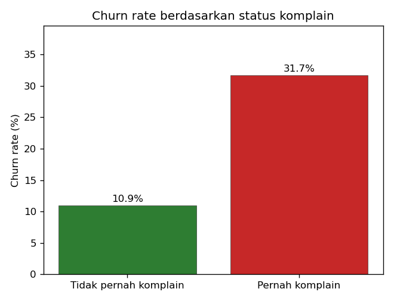
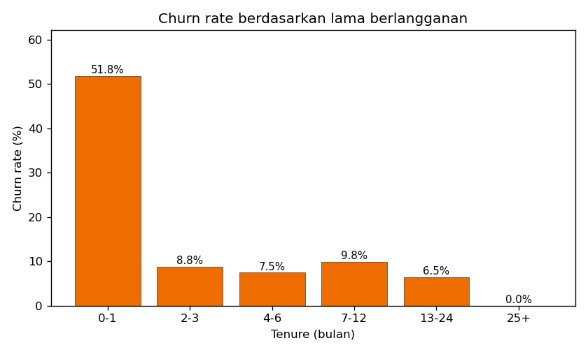
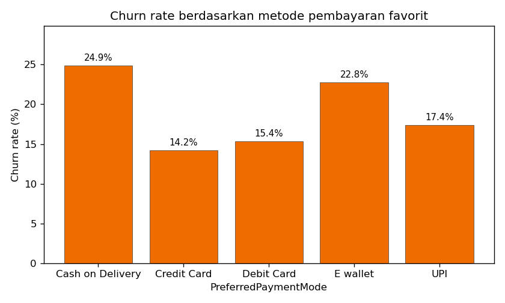
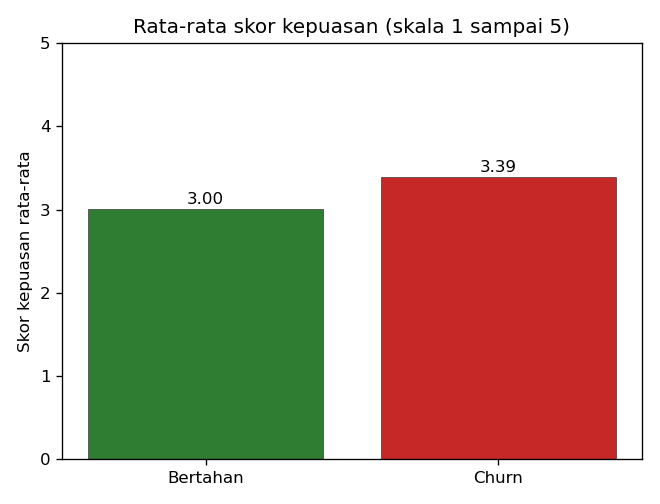
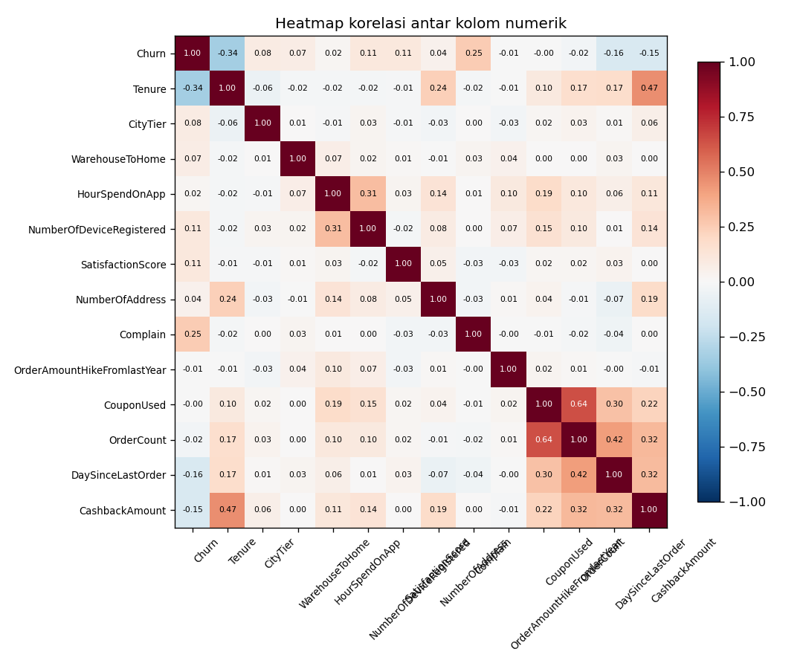

Dashboard hasil analisis 5.630 pelanggan sebuah perusahaan e-commerce dari dataset publik Kaggle "Ecommerce Customer Churn Analysis and Prediction". Semua angka pada halaman ini adalah hasil menjalankan skrip di folder src/ pada dataset tersebut.

Pelanggan yang pernah komplain berhenti belanja pada tingkat 31,67%, hampir tiga kali lipat dibanding pelanggan tanpa komplain yang hanya 10,93%. Ada 1.604 pelanggan yang pernah komplain.

Rata-rata lama berlangganan pelanggan yang churn hanya 3,86 bulan, sedangkan pelanggan yang bertahan rata-rata sudah 11,40 bulan. Masa awal berlangganan adalah periode paling menentukan.

Pengguna Cash on Delivery punya churn rate tertinggi 24,90%, disusul E wallet 22,80%. Terendah adalah pengguna Credit Card 14,21%.

Rata-rata skor kepuasan pelanggan yang churn (3,39 dari 5) justru lebih tinggi daripada pelanggan yang bertahan (3,00). Skor survei kepuasan saja tidak cukup untuk membaca risiko churn.

Korelasi terkuat dengan churn: Tenure (minus 0,338), Complain (plus 0,250), DaySinceLastOrder (minus 0,156), dan CashbackAmount (minus 0,154). Rata-rata cashback pelanggan bertahan 180,6, sedangkan pelanggan churn 160,4. Pemakaian kupon hampir sama pada kedua kelompok (1,72 lawan 1,71), jadi kupon bukan pembeda utama retensi pada data ini.
| Model | ROC-AUC | PR-AUC | Precision | Recall | F1 | Accuracy |
|---|---|---|---|---|---|---|
| Random Forest | 0,9987 | 0,9939 | 0,9940 | 0,8684 | 0,9270 | 0,9769 |
| Gradient Boosting | 0,9970 | 0,9848 | 0,8624 | 0,9895 | 0,9216 | 0,9716 |
| Logistic Regression | 0,8854 | 0,6789 | 0,4411 | 0,8474 | 0,5802 | 0,7931 |
Fitur terpenting menurut permutation importance pada Random Forest: Tenure (0,3439), Complain (0,1328), PreferedOrderCat (0,0616), MaritalStatus (0,0592), dan NumberOfAddress (0,0423). Catatan jujur: skor model pohon yang nyaris sempurna menunjukkan label churn pada dataset publik ini mengikuti pola yang sangat mudah dipelajari. Pada data operasional nyata, performa umumnya akan lebih rendah.
| Segmen | Ambang probabilitas | Jumlah pelanggan | Churn aktual | Churn rate aktual |
|---|---|---|---|---|
| Tinggi | 0,60 atau lebih | 702 | 691 | 98,43% |
| Sedang | 0,30 sampai 0,60 | 305 | 197 | 64,59% |
| Rendah | di bawah 0,30 | 4.623 | 60 | 1,30% |
Segmen tinggi dan sedang hanya berisi 1.007 pelanggan (17,9% dari seluruh pelanggan), tetapi mencakup 93,67% dari seluruh pelanggan yang benar-benar churn. Artinya tim retensi cukup fokus pada kurang dari seperlima basis pelanggan untuk menjangkau hampir semua pelanggan yang berisiko pergi.